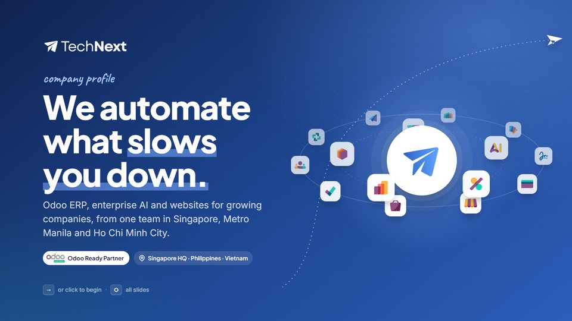
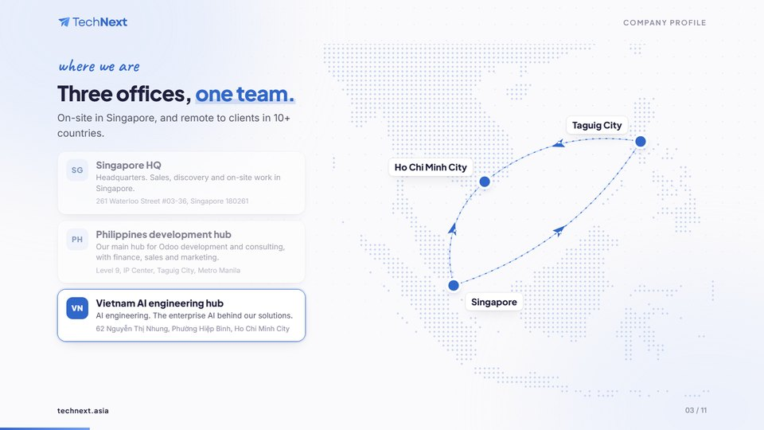
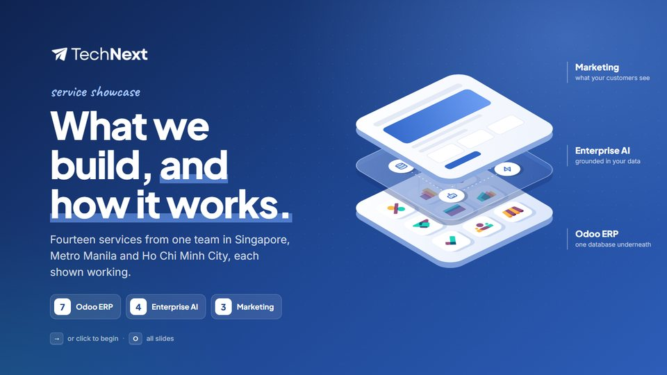
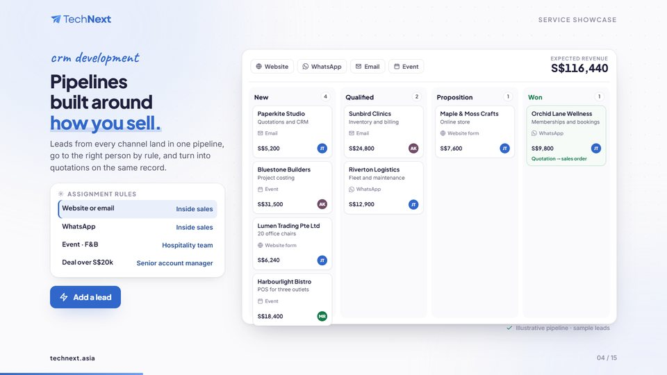
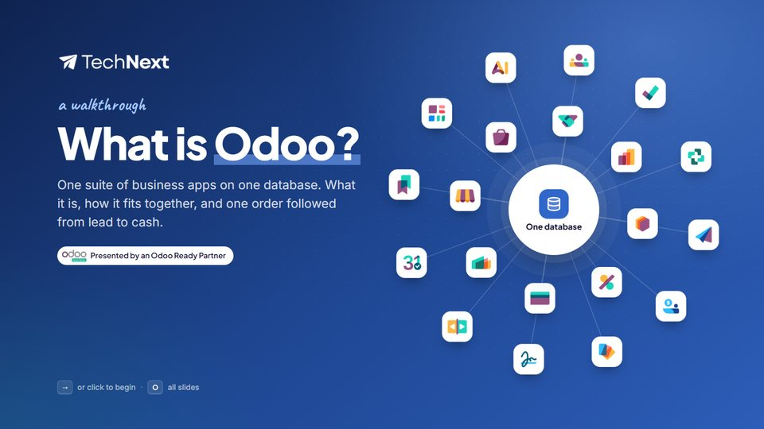
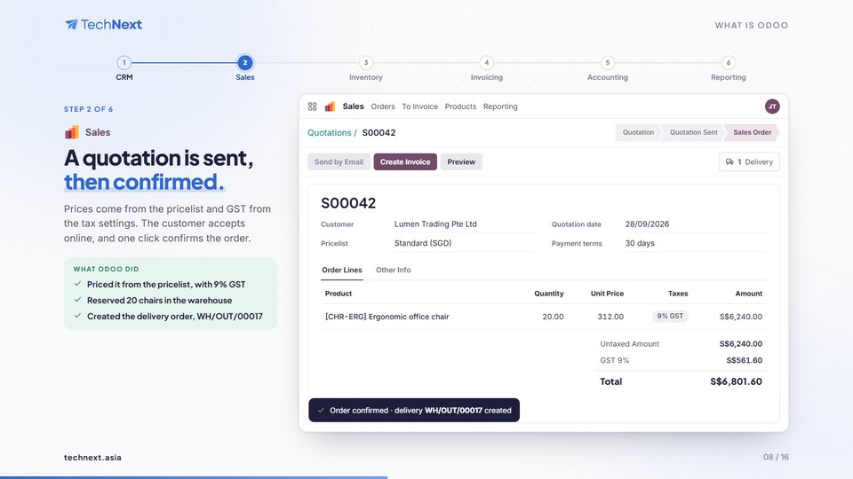

Company profile
Who TechNext is: three offices on a live map, the three practices, the Odoo partnership, how an engagement runs, the four AI disciplines and the company details.
Interactive presentations in TechNext branding. Open one and press → to present. Every demo inside runs live, with sample data.


Who TechNext is: three offices on a live map, the three practices, the Odoo partnership, how an engagement runs, the four AI disciplines and the company details.


All fourteen services, each shown working: the implementation plan, a live CRM pipeline, multi-company Odoo, integrations with outages, and four AI demos.


Odoo explained from scratch, then one order walked from lead to cash across six Odoo screens: CRM, Sales, Inventory, Invoicing, Accounting and Reporting.
?kiosk to the address (the “Kiosk loop” link) for an event screen that plays on its own.